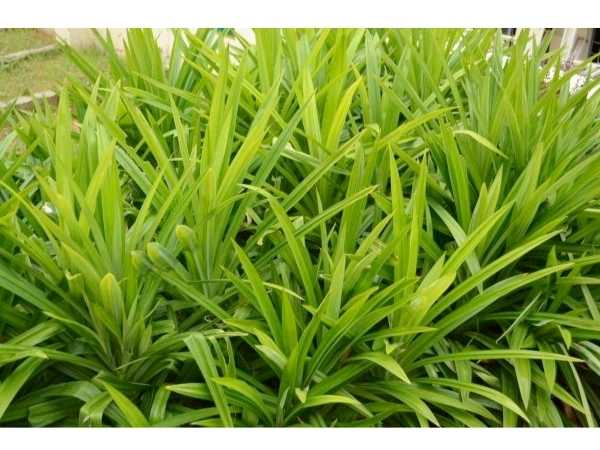

Pandanus amaryllifolius
Common Names: Pandan, Screwpine, Fragrant Pandan, Rambai Leaf
Local Name: Rambai Ilai (Tamil), Rampe (Sinhala), Bai Toey (Thai)
Family: Pandanaceae
Origin: Southeast Asia (likely Moluccas, Indonesia); widely cultivated across tropical Asia
Plant Type: Tropical herbaceous plant, 1–2 meters
Variety: Pandanus amaryllifolius — the only fragrant-leaved species in the genus
Average Lifespan: Perennial; indefinite with division and replanting
| Growth Habit | Upright, clump-forming tropical herb with basal suckers; forms dense clusters over time |
| Plant Size | 1–2 meters tall; clumps spread to 1 meter wide |
| Leaves | Long, narrow, blade-like, 40–80 cm long, 3–5 cm wide, bright green, spirally arranged, smooth margins |
| Flowers | Extremely rare in cultivation; this species is almost exclusively sterile and vegetatively propagated |
| Flower Characteristics | Male flowers (if produced) are tiny, in dense spadix-like clusters; female flowers unknown in cultivation |
| Fruit | Not produced in cultivation; the species is functionally sterile |
| Fruit Color | N/A — fruits not formed |
| Seed Characteristics | No seeds produced; propagation entirely vegetative |
| Root System | Fibrous with prop roots (aerial stilt roots) developing at the base as plant matures |
| Climate | Tropical; warm and humid year-round; frost-intolerant |
| Temperature Range | 22–35°C ideal; minimum 15°C; cannot survive frost |
| Rainfall Requirement | 1500–2500 mm annually; consistent moisture needed |
| Soil Type | Moist, humus-rich loamy soil; tolerates slightly waterlogged conditions |
| Soil pH Preference | 5.5–7.0 (adaptable) |
| Sun Requirement | Partial shade to full sun; best leaf color and fragrance in bright filtered light |
| Spacing | 60–90 cm between plants; clumps will fill in over time |
| Irrigation Method | Regular watering; keep soil consistently moist; tolerates brief waterlogging |
| Water Requirement | High; loves moisture; do not let soil dry out completely |
| Can it Grow in Pots? | Yes, excellent pot plant (10–20 liters); keep well-watered; bring indoors in cold climates |
| Fertilizer Schedule | Monthly during growing season with balanced organic fertilizer |
| Recommended Organic Fertilizers | Compost, vermicompost, diluted fish emulsion; nitrogen-rich feeds promote leaf growth |
| Pesticide Frequency | Rarely needed; pandan is naturally pest-resistant |
| Recommended Organic Pesticides | Neem oil for occasional mealybugs or spider mites |
| Mulching Practice | Organic mulch around base to retain moisture and suppress weeds |
| Training System | None needed; remove old yellowing outer leaves to keep plant tidy |
| Pruning Time | Any time; remove old or damaged leaves as needed |
| How to Prune | Cut outer older leaves at base; divide overcrowded clumps every 2–3 years |
| Common Pests | Mealybugs, spider mites (rare); generally pest-free |
| Common Diseases | Leaf tip browning (from dry air), root rot (in poorly drained heavy soil) |
| Disease Prevention & Remedies | Maintain humidity, ensure drainage in pots, avoid cold drafts |
| Pollination Details | Functionally sterile; does not produce viable seeds in cultivation |
| Propagation by Seeds | Not possible; seeds are not produced |
| Propagation by Cuttings | Basal suckers (offsets) separated from mother plant; root readily in moist soil within 2–3 weeks |
| Propagation by Grafting | Not applicable; division of suckers is the standard and only propagation method |
| Water Usage | Moderate to high; thrives near water sources and in humid environments |
| Soil Conservation Practices | Dense clumping habit stabilizes soil; prop roots anchor in wet areas |
| Organic Practices Used | Naturally pest-resistant; minimal inputs needed; ideal for organic gardens |
| Companion Plants | Ginger, turmeric, galangal, lemongrass (tropical herb garden companions) |
| Biodiversity Benefits | Provides ground cover in tropical gardens; leaves used as natural food wrapping (reducing plastic) |
| Commercial Production Regions | Thailand, Malaysia, Indonesia, Sri Lanka, South India; grown in home gardens across tropical Asia |
| Market Uses | Fresh leaves for cooking, pandan extract, pandan paste, natural food coloring |
| Processing Uses | Pandan extract for baking, pandan essence, natural green food dye, woven handicrafts from dried leaves |
| Market Value (Approx.) | ₹50–150 per bundle (fresh leaves); pandan extract ₹200–500 per bottle |
| Symbolism | Called the "Vanilla of the East" for its sweet, aromatic fragrance; symbol of Southeast Asian cuisine |
| Traditional Uses | Leaves tied in knots and added to rice, curries, and desserts; used in Sri Lankan and Malaysian cooking for centuries; natural air freshener |
| Anxiety & Sleep | Pandan leaf tea traditionally used as a mild relaxant and sleep aid in Southeast Asia |
| Immune Support | Contains antioxidants and flavonoids; traditional tonic for general wellness |
| Anti-inflammatory Properties | Leaf extracts show anti-inflammatory activity; used in traditional poultices |
| Heart Health | Traditional use for lowering blood pressure; leaf decoction consumed in folk medicine |
| Digestive Health | Pandan tea aids digestion; traditionally used to relieve stomach pain and flatulence |
Disclaimer: Information provided is for educational purposes only and not a substitute for medical advice.
Add your field observations here.